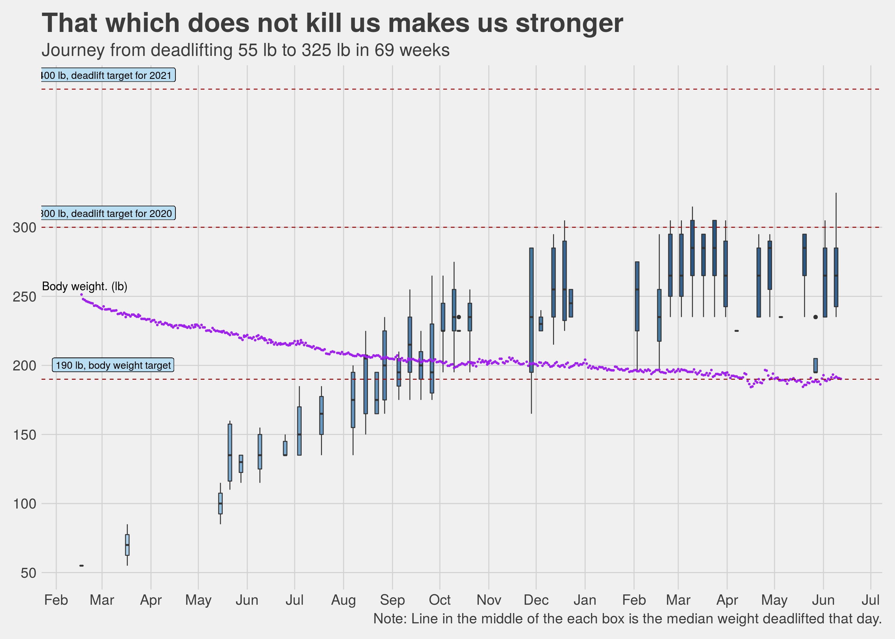
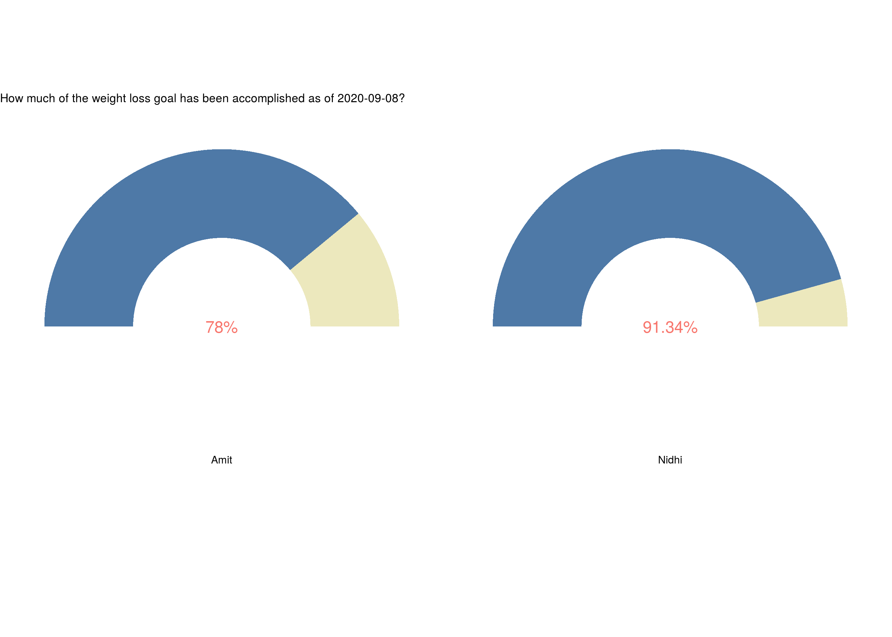

Chapter 4 Exercise: Putting in the hard yards
You would have probably heard that managing weight is 70% about nutrition and 30% about exercise. I think this correct. Having said that, we should not downplay the 30% i.e the exercise. As I have mentioned earlier in the book, a few years back I tried a purely diet based plan and achieved good results. The problem with it, like with all diet based plans, was that it was not sustainable. There is another aspect to this as well, when I tried losing weight purely via the diet route (could also call it calorie counting) my overall appearance became thinner or I would even say weaker. While I do not recall feeling lack of energy but the appearance was as if I had just lost a lot of weight and it did not look healthy. Several people asked me out of genuine concern if I was sick and when I told them that I was doing this diet their reactions were on the lines of “ok, but don’t do more of it”. This time however, things are different, both me and my wife look leaner and fitter. Our body structure has become “denser” if that is the right word to use here and it is because of that we look thinner, fit into much smaller clothes. Appearance wise we do not have the starved look that I suppose comes from severe calorie restricted diets. Without a doubt, this is the result of the rather intensive exercise routine that we now have.
4.1 There is always a 1st time
When I went to the gym for the first time this year, it was not just the first time for me in the year 2020 but it was for the first time in my entire 41 years. I had no illusions of how supremely unfit I was and how difficult this was going to be. Sometimes, I used to see people exiting after their class and I used to tell myself “OK, that person looked great, but that is probably because he has been working out since forever”. Ofcourse, this may or may not have been true, but my goal was to keep telling myself that if I was disciplined enough to show up rain or shine and do the exercises as told then I would get better, that is just how it works (at least that is what I told myself anyway).
I look at some old videos now of me doing exercises like planks or air-squats when I started and I compare them with the more recent ones of me doing the same exercise. My movements used to be very clumsy, almost hilarious, and it is to the credit of the trainer that she did not give up on me. Nidhi on the other hand, being a dancer, her movements had a natural rhythm, she had flexibility, speed and having done some exercises while growing up, she was much more comfortable with the whole setup. My objective was not to be as good as her but to simply by better than me from four weeks ago.
We started with working out twice a week, and then went to thrice, and then four times and now I work out five times a week. Nidhi tried the four times a week routine but is now nicely settled into three times a week. In 8 months I have come from having to push myself to workout twice a week to now seems like my body cannot have enough of it. Of course, it helps that because of Corona, we are all working from home so we have a little more flexibility with time. If there is one silver lining that I can see this otherwise disaster of an year, it is this.
One day a couple of months into training, I stumbled upon a YouTube video of the training routine of an actress who played the role of a superhero in one of her movies. Her trainer said when she came to the gym and looked at people doing pullups and deadlifts, her reaction was that oh yeah this is cool and all but I can’t do that, and a few months later she was deadlifting 235 pounds. When I saw the video, I had a similar reaction. I thought sure, a Hollywood actress with a celebrity trainer can ofcourse do this, I can’t. I WAS WRONG. I recently deadlifted 255 pounds, and while I haven’t done pullups yet, I can at least visualize myself doing them, not easy, but definitely possible. I will end this section by saying I am hugely inspired by how much work actors and actresses put in these days to be fit and to look the part that they are playing (the references section as a link to some videos).
4.2 Our workout routine
I am clearly not qualified to talk about the technical details about what makes a good workout but I can certainly state what we did and loved.
Our workout sessions were an hour long and were mostly divided into four parts:
- Warm up (about 5 minutes)
- Strength (about 10 to 15 minutes)
- Strength & Conditioning (15 to 20 minutes)
- Core (5 minutes)
With some rest time and setting up equipment for different exercises the above routines added upto an hour (give or take 5 minutes). From mid January when we started to about the end of March we were working out twice of week in our trainer’s gym and since then we have been working out at home and our home gym has slowly metamorphosed from being your amateur home gym to a souped up version with lots of weights, barbell, deadlift equipment, resistance bands, boxes, pull up bars, rowing machine etc. Some of the stuff we bought, some our trainer was kind enough to lend us for a while (because Corona). Here are a couple of pictures.
Weights and such
Rowing machine and cycle
For a long time, and even today, I tell myself before the workout, that warmups are easy, the strength portion is just 10 minutes so it will be over quickly before I realize and then the conditioning is the only part that I have to push through and then by the time I am half way through the conditioning it would be almost over and then core is super easy (it is not). This kind of mental setup helps me get through the hour. Ofcourse once I am in the middle of it, unless the workout on the day absolutely pulverizes me, my mind goes almost totally blank, no thoughts at all. I have experienced this many times, going into the workout from a crisis at work is a huge mental shift. Once the workout is over, I realize that maybe the work problems are not that insurmountable as they appeared an hour back. It could be the endorphins kicking in, or just the fact that I have had the oppurtunity to (forcibly) extricate myself from the crisis situation and now after an hour I am able to think more clearly. I do not know what is the reason, but I do know that I experience mental clarity after the workout.
The following tables show the different exercises we did, over time, as part of the warmups, strength, conditioning and core. These are over a period of time, with the more difficult ones such as the Turkish getup added much later and for the ones which we did from the start we kept on increasing the weights or the numbers of sets and reps over time.
| Exercise Routine | |
|---|---|
| So many different exercises for different muscles | |
| Routine | Exercises |
| Warmup | air squats, good mornings, sunrises,grasshoppers,teeter-totter,windmills,... |
| Strength | high low carry, farmer's carry, angle press, deadlift, single arm floor press, weighted squat jumps, sled push,... |
| Conditioning | rowing, barbell push press, body rows, thrusters, burpee, weighted butt bridges, goblet squats, hanging power cleans, overhead step ups, jump squats, lateral box step overs, side hip raises, push ups, kettle bell swings, skull crushers,... |
| Core | palloff holds into presses, bicycles, three pump crunch, bear hold, russian twist, scissors, sandbag pull through, planks, side planks,... |
| Not a complete list, just the ones I randomly remembered. | |
The conditioning part of the routine usually consisted of either a 12 minute AMRAP (as many rounds as possible) or a 12 minute EMOM (every minute on the minute) or sometimes a HIIT (high intensity interval training) such as Tabata or on some days just a combination of exercises.
4.3 Our calendar so far
The following chart shows the calendar for the year 2020 with the days we exercised marked with an [E] and the amount of weight lost/gained reflected by the color. Red indicates weight loss and green indicates weight gain. More “red” than “green” in a month means overall we lost weight in that month. I like this chart a lot because it brings out very clearly that weight loss is never a straight line, you gain some (days) and you lose some (days), except in this case, losing is better.

You can notice in the charts the number of days marked as [E] (for exercise) has increased over the months. This is something that happened organically. As we exercised more and ate right, the body became stronger and it could take on more work and so we exercised even more, it became a self driving cycle. Exercise also gives you a “high”, a feeling of euphoria, you cannot miss it. In other words, this increased number of workouts, doing more sets and reps, this was only partially driven by just the motivation to lose weight, the rest of it was because a) the body became strong enough that the current load became easier and so a step up was needed and b) the desire for that “high”, it makes you want to get more of the stuff that got you here in the first place. If this book ever gets into the hands of someone who has exercised for any length of time, I would like to add that what I have written here may seem routine and totally on expected lines to you but to me this was unlike anything I had experienced before, it was a joyous discovery.
4.4 What does’nt kill you makes stronger
Deadlifts are my favorite. They are a full body exercise, our trainer says deadlifts are a game changer. I have watched a lot of celebrity trainers on YouTube and heard them echo the same sentiments. While we did several different variants of the deadlift such as the single leg stiff leg deadlift, the sumo stance deadlift etc. but my personal favorite and something that I religiously tracked was the deadlift with a hexbar. Maybe it had to do something with the visual imagery I had in my head of this being a strong man’s exercise. I remember that when I first saw the hexbar in the gym I asked our trainer when are we doing that and she said, you will get there in a couple of weeks (this was sometime in mid to late February). The hexbar weighed 55 pounds, it was the heaviest they had.
The first day I tried it, I recall that the trainer was very cautious, I don’t know if she thought I could even do it (I was fat and never been to the gym until last 2 months remember, this was February). To this day, when I have graduated from lifting the hexbar with no weights to lifting the same hexbar with 100 pound weights on either side, she is still extremely cautious and correctly so. I have heard from her that it is possible to deadlift 3 times your body weight, while that is not my target, I do want to get to deadlifting 400 pounds eventually, maybe sometime in 2021.
Here is a chart that puts this all in perspective. You can see a boxplot of the deadlifts I did over time alongwith a line chart showing my weight. As my body weight is going down, I am lifting more and more. In late August, I reached a point where I was deadlifting more than my body weight. The target for 2020 is to be able to deadlift 300 pounds.

4.5 Do I really need a trainer?
Short answer: Yes. Longer answer: It depends.
We were very fortunate and I certainly count it as a blessing that we were able to simply meet a wonderful trainer without actually having to find one. A kind hearted, good natured person who also happens to be a fitness trainer, who just walked into our lives when we decided to set sail on this journey. Maybe if we worked with someone else our experience would have been different. Given what we did experience, I would certainly recommend finding a good trainer. A good trainer is one who makes you feel that they are personally invested in your success. With that being said, there are other more technical reasons as well for why you should get a personal trainer.
DIY workouts are great but they could also be limited. You can buy an exercise cycle, maybe a rowing machine, an elliptical, or any of those one stop shop kind of machines and start working out on your own. Good for you. What I realized is that there is a lot more to workouts than just calorie counts. If your goal is something beyond just burning calories but to gain overall strength and build muscle (not to be confused with becoming a body builder) then you need to do a lot of different kind of exercises which work on different body parts and different muscle groups. This requires knowledge and expertise, it is not DIY. It is important that these exercises are done under expert supervision where a trainer is watching your posture, giving feedback and correcting you in real time. If you do not feel good with a particular exercise then a good trainer will suggest an alternate, there are just so many different things that come into play here as we experienced over the last several months. This idea that just because all knowledge is now simply a Google search away so everything is DIY does not apply here and could even be dangerous in my opinion.
A good trainer will keep your long term goals in mind and keep on evolving your workout to help achieve those goals. Goals here are not just in terms of weight but also in terms of let’s say your cardio vascular strength. As your body starts getting stronger, the workouts need to adapt. For example, if you could do 3 rounds of 4 exercises in a 12 minute AMRAP today, then maybe in two months you should expect to do 4 or 5 rounds of the same (or an even harder) routine in the same time. A trainer would be able to gauge that and work with you to help achieve that. For myself, I have a goal of being able to deadlift 300 pounds, going from 200 to 300 pounds requires paying extreme attention to minute detail such as a specific breathing pattern while doing the deadlift, achieving that requires doing another different exercise which helps perfect the breathing pattern and once that is mastered only then do you go beyond a particular weight. Needless to say, this level of detail is beyond what most people could figure out themselves. Even if I could figure all this out, question is, should I? Am I better off spending my time doing what I do best and leave this to the expert? I certainly believe in having an expert guide me and work with me rather than me spending the time and energy to figure it out on my own.
There is another benefit of having a trainer, it obligates you to show up. I don’t have the numbers but I don’t think the odds are too high that I would have dragged myself to a gym to workout 30 minutes on a treadmill (or an elliptical or a cycle) 5 times a week on my own. Let’s face it, this is probably also true for most people. It changes things altogether if you have have a trainer who you know would be there on time expecting you to show up and the fact that you have spent a lot of money for it, also helps :). It would be remiss if I do not mention that the fact that my wife and I started working out together was very helpful, two is better than one. We had each other to share our experiences of every workout we did together. A lot of our conversations this year have been about health and fitness. Couple goals, anyone?
In the age of Instagram & YouTube celebrities, it is easy to be carried away by all the fluff, and say I will try this at home on my own, do yourself a favor, get a trainer IRL (in real life).
I am reminded of a story that I read when I was a kid, there was a small boy who wanted to acquire all knowledge without having to go through the rigors of learning from a Guru, so he decided to do extreme penance for it. One day he saw a man putting handfuls of sand into a river, he asked the man what was he trying to do, the man said “I am trying to make a bridge of sand, if I throw enough sand surely I would be able to build the bridge”. The boy laughed, what a foolish idea. The man replied if this is foolish than what would you say about trying to acquire all knowledge yourself without a teacher. I think that story sums up my thoughts about the “do I need a trainer?” question almost perfectly.
Having said all this, if your goal is to burn calories to lose a few pounds, then yes, any form of exercise is good. Walking, running, working out on a treadmill or any other machine, any physical activity that helps you move is good. You don’t need a trainer for that.
4.6 Why my workouts suck sometimes
All days are not the same, all workouts are not the same as well. I have had some days where I felt, “Oh, my God, why does this workout feel so difficult?”, “I can’t do this anymore”, “Remind me why am I subjecting myself to all this again?”. It happens and if you workout consistently, you will experience this as well. Good news is, as I learnt, this is normal and even expected.
Here are some reasons I could think of why sometimes workouts are just plain awful.
Lack of sleep: If you are working out first thing in the morning and have not had a good night sleep the previous night then chances are you would probably not have the best workout. I have had days where I was working late into the night and then next morning just woke up 20 minutes before the workout. This is not good. For the kind of workout we did, small things matter, not sleeping enough is absolutely bad and a good sleep is non-negotiable.
Not drinking enough water: Just bad for so many reasons. This is not that hard to fix, I started keeping a water bottle with me in my office and that makes it easy to consume 2 liters of water a day.
Expecting progress in a linear path is wrong: I think I was wrong in expecting that I can keep on working the same pace and I can keep on getting results at the same pace. That is not how the body works. One should expect progress as a zig-zag line, ups and downs are not bad, they are expected and when they happen it indicates the body is responding to the demands of the workout. What feels difficult on one day seems do able on another day and vice-versa. This is totally how it is supposed to be. As long as we keep on making changes in the workout to adjust for the adjustments the body is making so that there is always a little challenge but not too much of it, things will be fine.
How much to train: while I firmly believe it is mind over matter so one should keep on pushing oneself but then there has to be a method to the madness. Each and every workout does not have to be insanely hard, a light workout on some days is good and even warranted to allow the body some rest. The key is to push yourself very close to the edge but not to try going over the edge every time. Over time the edge will automatically push itself forward and you will automatically be able to do more. Do not try to go one up on your body in every workout session, the aim is not to fight the body, it is to respect the body and work with it. Working out too much produces more cortisol than needed, and that is bad, just do enough but don’t go overboard.